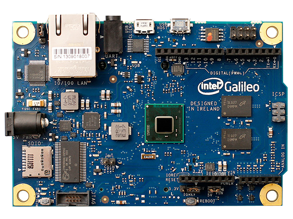

Intel ® Galileo płytka oparta o procesor Intel ® Quark SoC X1000 z taktowaniem 400MHz 16 KBytes L1 cache, to idealne narzedzie dla deweloperów zajmujących się urządzeniami klasy Arduino.

W kwietniu na konferencji Microsoft Build Developer Conference 2014, Microsoft poinformował o swoim programie dla deweloperów "Windows Developer Program for IoT", który daje nam możliwość programowania przeróżnych urządzeń w oparciu o tę płytke oraz ich zestaw SDK. Program ten jest otwarty dla wszystkich deweloperów i można do niego dołączyć rejestrując się na stronie https://www.windowsondevices.com/, gdzie oprócz zestawu narzedzi dostaniemy również układ Intel ® Galileo całkiem za darmo.